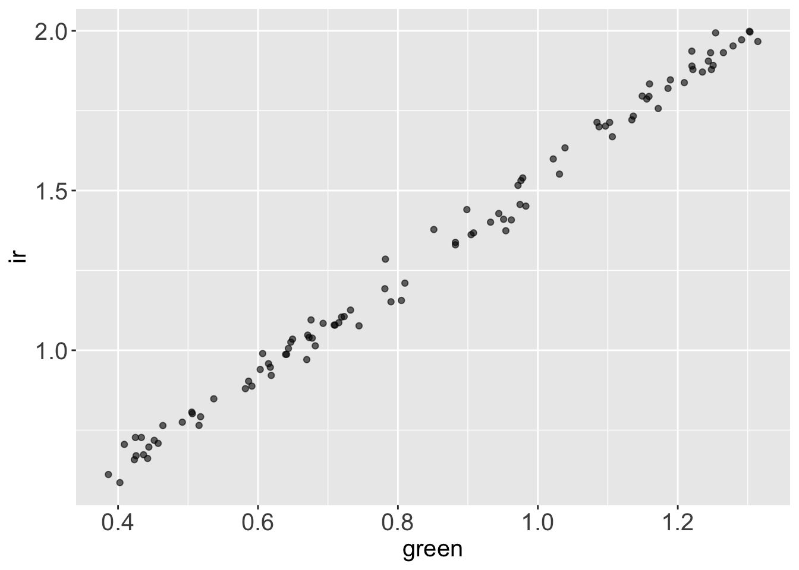
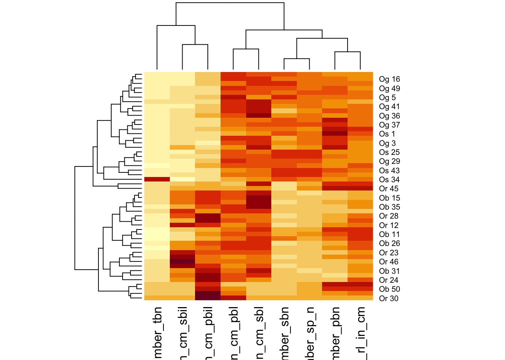
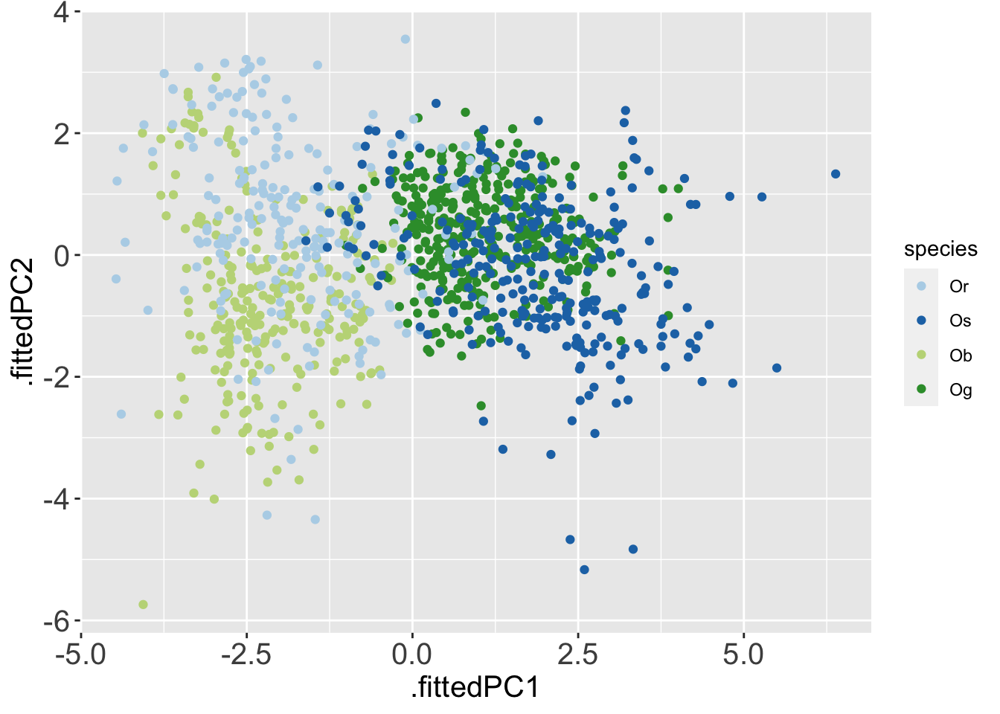

library(dplyr)
library(readr)
library(magrittr)
library(tidyr)
library(palmerpenguins)
library(tibble)
library(ggplot2)
library(readr)
library(here)
library(stringr)
library(broom)
theme_update(axis.title = element_text(size = 15),
axis.text = element_text(size = 15),
strip.text = element_text(size = 15))Unsupervised Learning - Explore your Data with Clustering and PCA
🚧Work in Progress⚠️
1 Introduction & Setup
1.1 References first
As always, my favorite references for unsupervised learning are:
- Introduction to Statistical Learning, chapter 12.
- Introduction to Data Science: chapter 34 and part of chapter 33.
- Chapter 16 of Tidy Modeling with R.
- A tutorial on Principal Component Analysis [PDF] by Jonathon Shlens.
There’s an additional reference that I really like, that explains Principal Components visually. Check it out!
1.2 Ok, but what is Unsupervised Learning?
Unsupervised learning might seem strange.
Comparing it to what we have learned about supervised learning in the previous chapter, when we run a supervised model, such as a linear regression model, we estimate a function that is able to guess an outcome \(Y\) starting from the value of a series of predictors \(X_1, X_2, ..., X_n\). We can then use statistical indicators to investigate how likely it is that the model that we have estimated is explaining how \(Y\) responds to variations in the predictors \(X\) or if our model is inappropriate for the data and is capturing only noise. So, in supervised modeling we have a way to tell if our model is “good” or “bad”.
In supervised learning instead, we don’t have, or we don’t care to look at an outcome variable \(y\). We look only at a series of predictors \(X_1, X_2, ... X_n\), and explore if we can group our observation that make up each predictor in an interesting and insightful way. Since we don’t have an outcome variable \(Y\) that we could use to test the performance of our model, there is no real way to tell if our unsupervised model is “good” or “bad”. The model will probably show us some pattern in the data, and it’s up to us to investigate that pattern further to understand if it is useful.
The unsupervised methods that you have already heard about are probably:
- Clustering.
- Principal Component Analysis.
You could also hear the term dimension reduction referring to unsupervised learning methods. This is a great way to describe them, since we often use them to reduce the dimension, or variables, of a complex multivariate dataset to a smaller, informative and more manageable subset or combination of them.
1.2.1 Examples of unsupervised learning questions
Coming back to the rice panicles dataset: The group that published the paper have measured many variables (predictors): rachis_length, primary_branch_length, primary_branch_number, secondary_branch_length, internode_length and so on. We might be interested to know if there are groups of rice accessions (observations) that are similars among each others, for example, maybe there is an unexpected group of rice varieties with long secondary branches, short rachis, and few primary branches, or vice versa.
We probably don’t even know which pattern we are looking for, we just want to know if there are groups of rice varieties with similar panicle features, so that later we can investigate those features. If our data are multivariate, and they often are, it is unlikely that we will manage to explore all the combination of features visually, so we can seek for pattern in the data with unsupervised learning, such as PCA or clustering.
Otherwise, we might measure many type of pollutants, which would be our variable/predictors, in many samples of soil, which would be our observations/samples, from many areas of the world. We want to know if there are groups of soils with similar combination of pollutants, to investigate their history, and their effects. We could again use clustering or PCA to search for those groups in multivariate data.
Or, similarly, we might be measuring gene expression (observations) in many sample of different tumors (variables/predictors), and we want to look at those data to seek for patterns and understand if group of tumors have similar unexpected features. Again, we could use unsupervised learning to search for those patterns.
1.3 R packages
(the ususal)
1.4 Data
We will keep working on the rice dataset.
rice <-
paste0('https://raw.githubusercontent.com/othomantegazza',
'/mawazo-summer-school/main/data-int/rice.csv') %>%
read_delim(delim = ';') %>%
janitor::clean_names()Rows: 1140 Columns: 18
── Column specification ────────────────────────────────────────────────────────
Delimiter: ";"
chr (6): Id, Species, Accession Name, Origine Continent, Type (Wild/Cultiva...
dbl (12): Replicate_nb (1/2), Plant_nb (1 to 3), Panicle_nb (1 to 3), Rachis...
ℹ Use `spec()` to retrieve the full column specification for this data.
ℹ Specify the column types or set `show_col_types = FALSE` to quiet this message.# define colors
rice_colors <-
c(Or = '#b5d4e9',
Os = '#1f74b4',
Ob = '#c0d787',
Og = '#349a37')2 Principal Component Analysis
When we perform a Principal Component Analysis (PCA), we take the variables in our dataset and we use them to estimate new variables that are a linear combination of the original ones. The new variable will be orthogonal, thus uncorrelated to each others, and are called the principal components.
In detail, the transformation that we perform to estimate the principal components, are rotations of the original axis in a way that the first principal components corresponds to the main axis of variation of the original data, the second component corresponds to the second main axis of variation, orthogonal to the first one, and so on until we have as many components as are the variable of the original dataset.
Given the hypothesis that the main axis of variation collect the signal available in the dataset, and that the axis of minor variation collect only noise, the rotations (loadings) and the values projected on the principal components (scores) can provide us with valuable insights on pattern that were hidden in the original dataset.
Let’s go through a naive example before running a PCA on the rice dataset.
2.1 A Naive Example
While plant leaves absorb blue and red light, they reflect green and IR light, satellite images vegetated area will show huge reflectance values in those wavelength.
Let’s imagine we have collected a dataset in two dimensions, in which we have collected two variables are green and IR reflectance for 2000 spots in heavily vegetated area.
Both variables will basically be a function of the coverage of land with plants, but we don’t know yet. So, given this assumption, our dataset could look something like this.
Let’s assume that the vegetation coverage v is measured in a value between 0 and 1. We can generate a v vector that stores 100 numbers sampled randomly from a uniform distribution, that simulates vegetation coverage values between 0.3 and 1.
size <- 100
v <- runif(size, min = 0.3, 1)IR and green reflectance will both be a linear function of the vegetation coverage stored in v, plus a small random noise.
reflectance <-
tibble(
ir = v*2 + rnorm(size, mean = 0, sd = .02),
green = v*1.3 + rnorm(size, mean = 0, sd = .02)
)So, the reflectance dataset looks like this.
reflectance# A tibble: 100 × 2
ir green
<dbl> <dbl>
1 0.775 0.492
2 0.705 0.409
3 1.85 1.19
4 1.94 1.22
5 0.802 0.506
6 0.727 0.433
7 1.70 1.10
8 1.09 0.676
9 0.661 0.442
10 1.52 0.972
# … with 90 more rows
# ℹ Use `print(n = ...)` to see more rowsAnd if we plot green vs ir reflectance, we see right away that they are higlhy correlated.
reflectance %>%
ggplot() +
aes(x = green,
y = ir) +
geom_point(alpha = .6)
rice_simple <-
rice %>%
sample_n(50)
rice_simple %>%
select(species, rachis_length_rl_in_cm:spikelet_number_sp_n) %>%
mutate(species = paste(species, 1:n())) %>%
column_to_rownames('species') %>%
mutate_all(~scales::rescale(., to = c(0,1), from = range(.))) %>%
dist() %>%
hclust() %>%
plot()
rice_simple %>%
select(species, rachis_length_rl_in_cm:spikelet_number_sp_n) %>%
mutate(species = paste(species, 1:n())) %>%
column_to_rownames('species') %>%
mutate_all(~scales::rescale(., to = c(0,1), from = range(.))) %>%
as.matrix() %>%
heatmap()
With superheat?
rice_pc <-
rice %>%
select(species, rachis_length_rl_in_cm:spikelet_number_sp_n) %>%
mutate(species = paste(species, 1:n())) %>%
column_to_rownames('species') %>%
# mutate_all(~scales::rescale(., to = c(0,1), from = range(.))) %>%
prcomp(center = T, scale = T)rice_pc_data <-
rice_pc %>%
augment() %>%
bind_cols(rice)rice_pc_data %>%
ggplot(aes(x = .fittedPC1,
y = .fittedPC2,
colour = species)) +
geom_point() +
scale_color_manual(values = rice_colors)
rice_pc$sdev[1] 2.0456555 1.2842683 1.0533272 0.9646701 0.7491605 0.5211812 0.4553862
[8] 0.2487671 0.1540413rice_pc$rotation %>%
as.data.frame() %>%
rownames_to_column(var = 'measurement') %>%
pivot_longer(-measurement,
names_to = 'component',
values_to = 'rotation') %>%
filter(component %in% c('PC1', 'PC2')) %>%
ggplot(aes(y = measurement,
x = rotation)) +
geom_col() +
facet_grid(rows = vars(component))